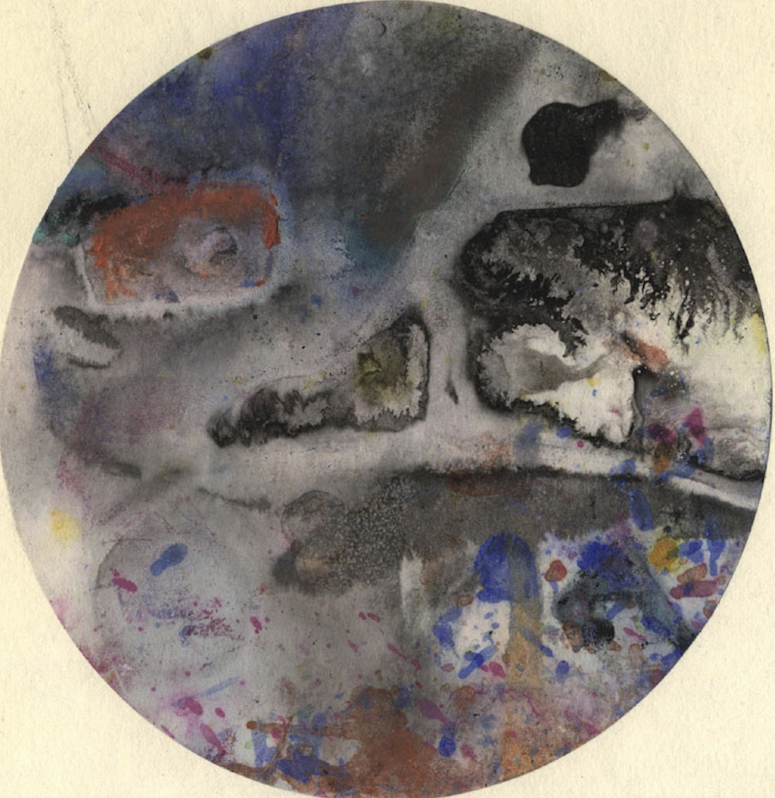
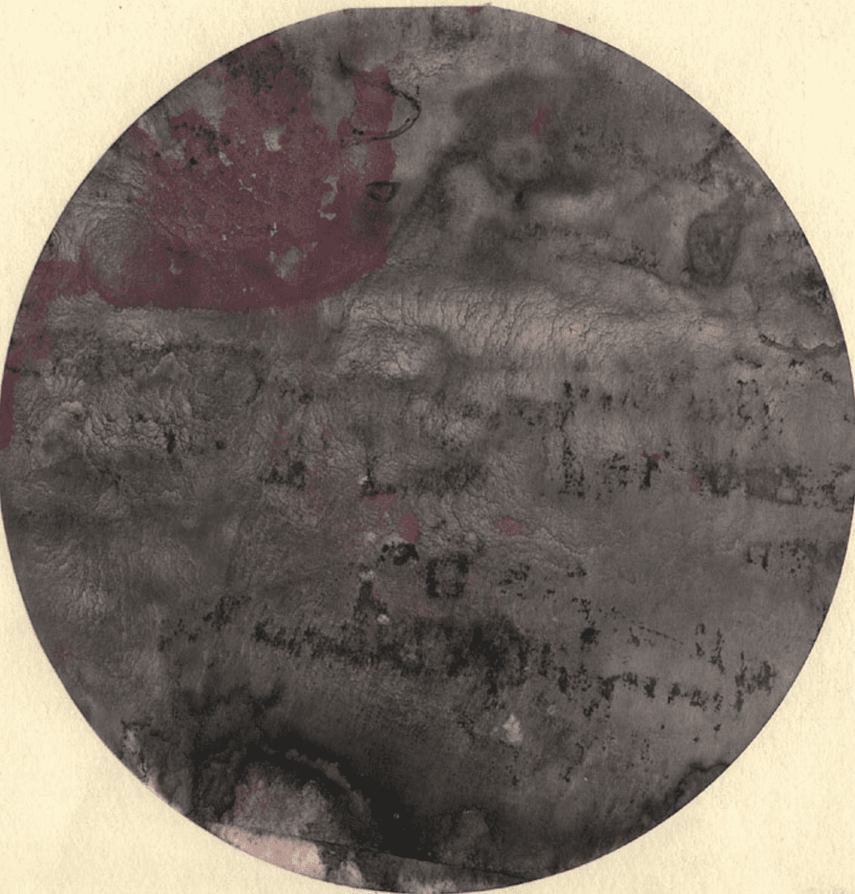

Премия Леона Богданова (ПЛБ) учреждена в Петербурге в 2023 году. Присуждается ежегодно за лучшее художественное высказывание на темы, созвучные Леону Богданову: погода, чай, вулканы и землетрясения, книги, люди, последние известия... Лауреат получает почётный диплом, сборник своих высказываний, а также подарок, соответствующий специфике его творчества.
Лауреат ПЛБ-2023 -- проект "Погода в Петербурге" ("научно-познавательное сообщество о погоде в СПб и метеорологии в целом"), ведущийся с 2014 года, и его авторы, Глеб Глушанок и Павел Иванов. "За поэтическую и синоптическую точность".
Леон Богданов (25.12.1942 — 25.02.1987) — ленинградский прозаик, поэт, художник. Сегодня известен в основном как автор книги «Заметки о чаепитии и землетрясениях» завершённой в рукописи в 1986 году и опубликованной посмертно (2002). В этой книге намечены поэтика и онтология, предвосхитившие многие современные тенденции в изящной словесности и философской мысли.
Премия была учреждена с тремя целями: продлить импульс ленинградской неподцензурной литературы (одним из важнейших представителей которой был Леон Богданов); привлечь внимание общественности к темам, близким Леону Богданову (таким как погода или землетрясения); освободить литературу от литераторов (или, что то же, расширить литературу до нелитераторов).
Форма (медиум) художественного высказывания может быть любой: текст, устная речь, песня, киносценарий, компьютерная игра... Высказывание может быть сделано на любом языке, но предпочтение отдаётся русскому и его диалектам. Срок высказывания не ограничен. Премия может быть присуждена одному автору или проекту только один раз.
Оглашение лауреата (лауреатов) происходит каждый год 25 декабря (день рождения Леона Богданова). В жюри премии в настоящий момент входят Алексей Конаков, Михаил Куртов, Андрей Муждаба, Никита Сафонов.

О лауреате
Лауреат ПЛБ-2023 -- проект "Погода в Петербурге" ("научно-познавательное сообщество о погоде в СПб и метеорологии в целом"), ведущийся с 2014 года, и его авторы, Глеб Глушанок и Павел Иванов. "За поэтическую и синоптическую точность".

О Леоне Богданове
Писатель, художник. Родился в эвакуации. Несколько лет семья жила в послевоенной Германии, где работал отец, позже вернулась в Ленинград. Учился в специализированной английской школе в Графском переулке. В школьные годы познакомился с К. Кузьминским и Б. Понизовским. Дружил с художниками и литераторами Ю. Галецким, А. Хвостенко, Л. Ентиным и Л. Аронзоном.
С юности занимался живописью и графикой, принимал участие в квартирных выставках. Писал стихи, эссе, создавал абсурдистские тексты-коллажи.
Позже стал писать более традиционную прозу, которую называл «дневниками». Машинописные сборники его произведений выпускались Вл. Эрлем под маркой «Палаты мер и весов». Печатался в сборнике «Лепрозорий–23» (1976), в журналах «Часы», «Митин журнал» и в антологии К. Кузьминского «У Голубой Лагуны». Оказал значительное влияние на Вл. Эрля, Б. Ванталова, В. Кондратьева и других литераторов.